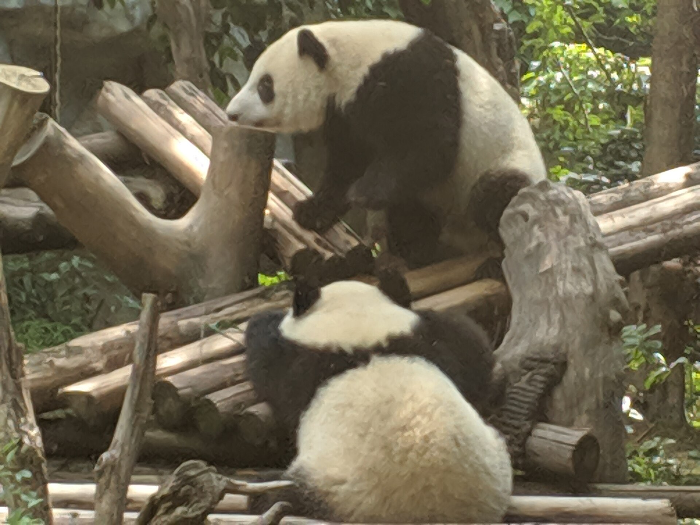
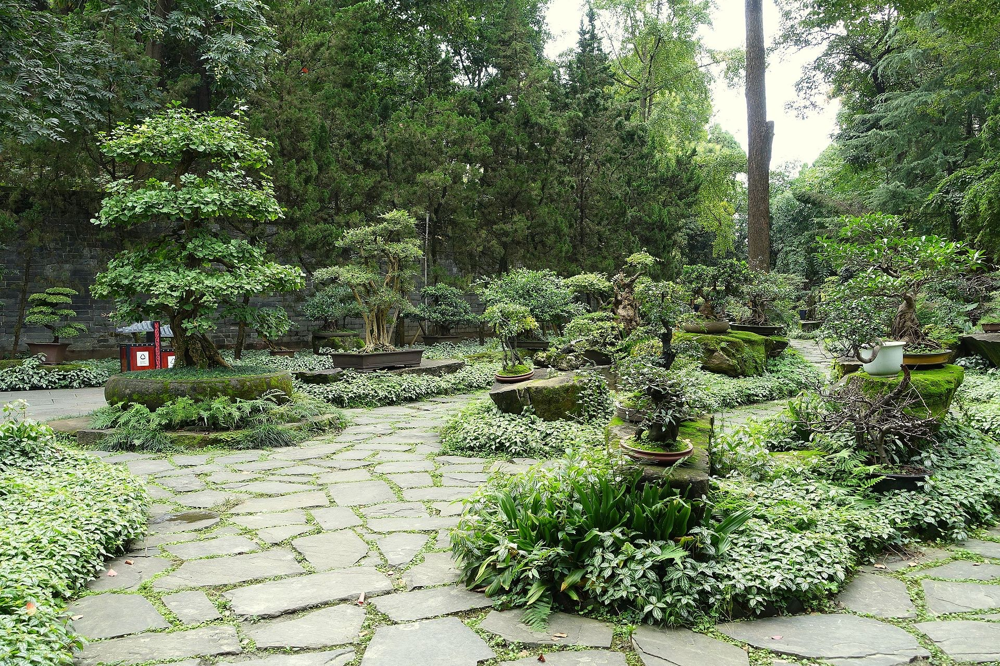
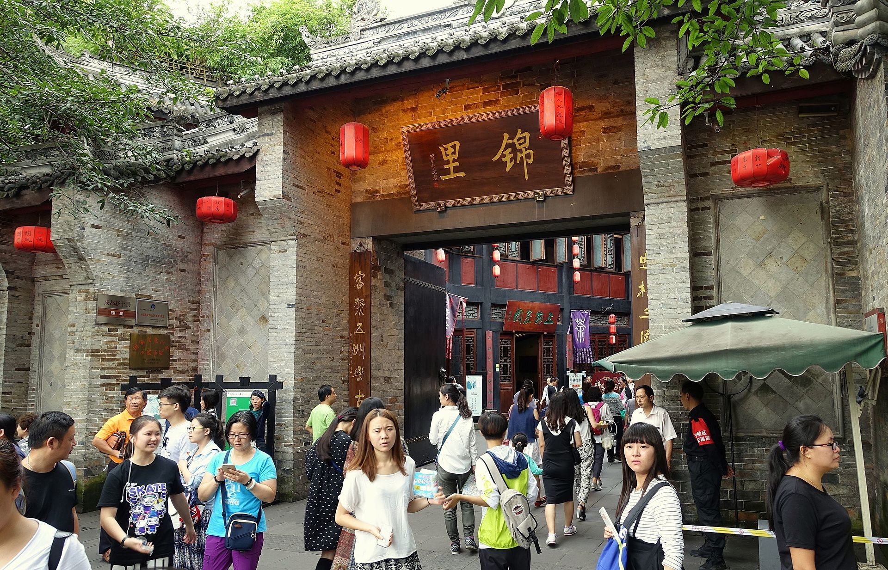

熊猫精华游 → 武侯祠短逛 → 锦里吃逛 → 晚间自由活动
景点只看代表性内容，把时间留给川菜、小吃、买伴手礼和晚上的自由安排。
🐼 熊猫短游🏯 武侯祠🍲 团建晚餐🌙 晚间自由活动
起床、简单早餐
酒店出发，分组前往熊猫基地
熊猫基地上午票，精华游 2–2.5 小时点击展开图片

把第一眼留给国宝
只看幼年熊猫、主要熊猫馆和科普区域，10:00 左右开始集合，10:15 左右离园；不安排熊猫塔、完整园区步行或长时间排观光车。
适合介绍：成都最有记忆点的第一站
拍照提示：绿色竹林＋熊猫是最稳的出片组合
集合方式：入园前约定出口集合点，按小组点名
图片：Jimmyshjj / Wikimedia Commons（CC BY-SA 4.0）· 来源页 ↗
离开基地、团队早午餐，返回市区
回酒店午休/自由休整，给团队留足缓冲
武侯祠博物馆 · 三国文化短逛点击展开图片

走进三国文化的绿荫里
只看汉昭烈庙、诸葛亮殿、三义庙和红墙夹道，快速了解“三国圣地”的核心内容；不安排长时间听讲解。
适合介绍：短时间感受成都代表性历史地标
拍照提示：红墙夹道、古树和石板路都很有氛围
逛法：1 小时到点集合，余下时间留给锦里吃喝
图片：Daderot / Wikimedia Commons（CC0）· 来源页 ↗
锦里古街 · 小吃、伴手礼与自由逛街点击展开图片

把晚餐变成一段夜游
锦里适合放在武侯祠之后，边走边吃、边逛边拍。不要把它排成“打卡任务”，给同事留一点自由选择小吃和伴手礼的时间。
适合介绍：第一次去成都很容易产生向往感
拍照提示：傍晚灯笼亮起后，入口和巷道都很出片
图片：Daderot / Wikimedia Commons（CC0）· 来源页 ↗
成都火锅/串串香团餐 · 预留 2 小时
晚间自由活动：夜景散步、茶馆、夜宵或回酒店休息，个人安排和费用自理
返回酒店，群内报平安
💡 这天按“熊猫短游、武侯祠短逛、锦里吃逛、火锅慢慢吃”执行，不追求景点逛完；晚间自由活动，按个人意愿安排。